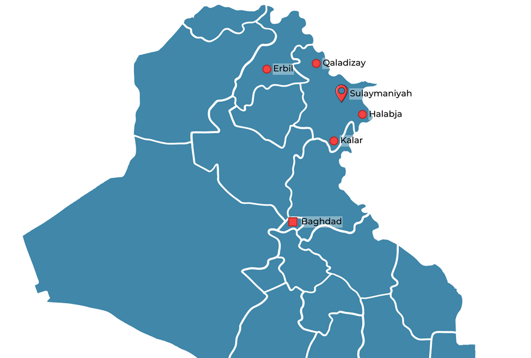

مشاريع إنشائية وبنية تحتية كبرى تُظهر قدرة فنية عالية وإدارة مشاريع منظمة والتزاماً بالجودة والسلامة.
مشروع استثماري صحي كبير في مدينة السليمانية — أحد أكبر المستشفيات في المدينة وفي العراق، صممته ونفذته شركة إيلين بالكامل. يقع جنوب السليمانية، ويضم جميع أقسام المستشفى المتطور على تسعة طوابق، مع مساحة خضراء تشكل 40٪ من مساحة المشروع، إضافة إلى موقف سيارات تحت الأرض.
فناء داخلي مضاء طبيعياً، مدمج ضمن المساحة الخضراء في الطابق الأرضي للمستشفى.
تصميم داخلي عصري ومتطور في جميع مسارات الحركة الرئيسية بالمستشفى.
ما يقارب 145 كم من خطوط نقل مياه الشرب ومحطات الضخ والخزانات في السليمانية ورانية وقەڵادزێ وأربت وحلبجة. تم توصيل المياه لآلاف الأسر الجديدة بإشراف مديرية الماء.
تنفيذ أنظمة صرف صحي ومجاري صندوقية في مدن وأحياء متعددة، مع تأهيل شبكات قديمة وتمديد شبكات جديدة للبلديات.
طرق وأرصفة وتمديدات مياه وصرف صحي ضمن 9 مشاريع في السليمانية ورانية وحلبجة، استفاد منها مئات الأسر.
مشروع مساحة خضراء عامة لبلدية السليمانية في حي كانیبان، يشمل نظام ري وأرصفة ومنطقة ألعاب للأطفال.

تعمل شركة إيلين في مدن رئيسية عبر العراق وإقليم كوردستان، منفذةً مشاريع بنية تحتية وإنشاءات كبرى في ظروف جغرافية وفنية متنوعة.
لنتحدث عن كيفية إسهام شركة إيلين بتميز هندسي في مشروعك القادم.
تواصل مع فريقنا